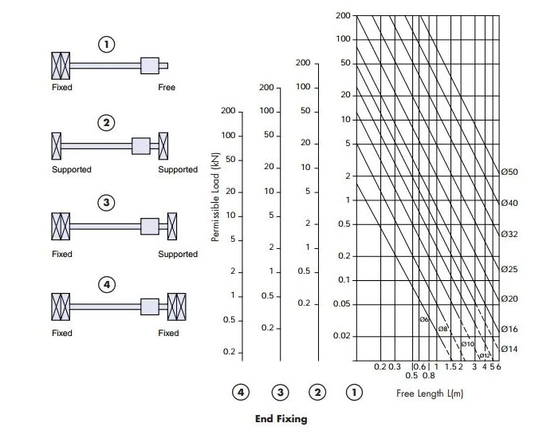

winch
Table of Contents
1. Περιστροφική κίνηση γερανού
1.1. Μειωτήρας περιστροφικής κίνησης
Η σχέση μετάδοσης υπολογίστηκε:
| γωνιακή ταχύτητα γερανού | \(i_2\) | 0.6 | rpm | |
| Στροφές κινητήρα | \(i_1\) | 750 | rpm | |
| Σχέση μετάδοσης κινητήρα - γερανού | \(i=\dfrac{i_1}{i_2}\) | 1125. | mm/min |
Με βάση την σχέση μετάδοσης επιλέγεται πολυβάθμιος μειωτήρας.
Οι επιλογές ανάλογα με τις βαθμίδες είναι:
| Ολική σχέση μετάδοσης | Βαθμίδες μειωτήρα | Σχέση μετάδοσης κάθε σταδίου | ||
|---|---|---|---|---|
| Σχέση μετάδοσης | 1125 | 2 | 33.5 | |
| 1125 | 3 | 10.4 | ||
| 1125 | 4 | 5.8 | ||
| 1125 | 5 | 4.1 | ||
| 1125 | 6 | 3.2 | ||
| 1125 | 7 | 2.7 |
Η σχεση μετάδοσης είναι πολύ μεγάλη για να χρησιμοποιηθεί απλός πολυβάθμιος με μειωτήρας
1.2. Υπολογισμός ροπής στρέψης
Οι δυνάμη τριβής από την κάθετη δύναμή στη στήριξη είναι:
Η αρθρωση ολισθαίνει περιστροφικά πάνω στη στη στήριξη.
Η τριβή υπολογίζεται από την παρακάτω πηγή:
\[Μ = \dfrac{2}{3}\times μ_κ \times F_{load} \times R_0\]
, όπου \(R_0\) η εξωτερική του δίσκου επαφής.
| Συντελεστής τριβή ολίσθησης χάλυβα-χάλυβα | \(μ_κ\) | 0.57 | |
| Κάθετη δύναμή στη στήριξη: | \(F_{load}\) | 27.14 | κΝ |
| Εξωτερική ακτίνα δίσκου επαφής | \(R_0\) | 40 | mm |
| Ροπή τριβής | \(Μ = \dfrac{2}{3}\times μ_κ \times F_{load} \times R_0\) | 413 | Nm |
Η περιστροφική κίνηση μπορεί να γίνει με απλή τριβή δύο δίσκων.
1.2.1. Υπολογισμός πλευρικής δύναμης εκκρεμούς

Η μέγιστη κινητική ενέργεια του φορτίου κατά την περιστροφή είναι:
\[Ε_{kin} = \dfrac{1}{2} \times m \times v^2\]
| Μάζα | m | 29 | kN |
| Ταχύτητα | v | 0.19 | m/s |
| Κινητική ενεργεια φορτίου: | 5.2345e-4 | W |
Η κινητική ενέργεια του εκρεμμούς μετατρέπεται σε δυναμική ενέργεια, (το φορτίο κάνει εκρεμμές και ανυψώνεται σύμφωνα με τη σχέση:)
\[E_{dyn} = m \times g \times h \]
Επειδή:
\[E_{dyn} = Ε_{kin}\]
Το φορτίο ανυψώνεται κατά την περιστροφική κίνηση με σταθερή ταχύτητα κατά
\[h = \dfrac{u^2}{2\times g}\]
| ταχύτητα | v | 0.19 | m/s |
| Υψος εκρεμμούς | \(h = \dfrac{u^2}{2\times g}\) | 1.805e-3 | m |
Για ύψος φορτίου 1 μέτρο
Η γωνία του εκρεμμούς είναι:
| Υψος εκρεμμούς | \(h = \dfrac{u^2}{2\times g}\) | 1.805e-3 | m |
| Υψος συρματόσχοινο | 1 | m | |
| Γωνία | 3.44 | degrees |
Tο φαινόμενο είναι δυναμικό και η πραγματικήξ γωνία πιθανόν να διαφέρει
Δημιουργείται πλευρική δύναμη.
| Κάθετη δύναμη | F | 27.14 | kN | |
| Γωνία εκρεμμούς | a | 3.44 | deg | |
| Πλευρική δύναμή εκρεμμόυς | Fx | 1.63 | kN |
Η ροπή που δημιουργείται είναι:
\[M_{dyn} = F \ times R\]
| Δύναμη | F | 1.63 | kN | |
| Ακτίνα | R | 3000 | mm | |
| 4890. | Nm |
1.3. Υπολογισμός ισχύς ηλεκτροκινητήρα για στρέψη:
Η ισχύς του ηλεκτροκινητήρα υπολογίστηκε από τη σχέση:
\[P = M \times \omega\],
, όπου Μ η ροπή στρέψης,
\(\omega\) η γωνιακή ταχύτητα
| Ροπή εκρεμμούς | 4890 | ||
| Ροπή τριβής | 413 | ||
| Συνολική ρόπής στρέψης | Μ | 5303 | Nm |
| γωνιακή ταχύτητα | \(\omega\) | 0.6 | rpm |
| Ισχύς ηλεκτροκινητήρα | \(P = M \times \omega\) | 333 | W |
| Απόδοση μετάδοσης κίνησης | 0.90 | ||
| Συνολική ισχύς | 370 | W | |
| Ηλεκτροκινητήρας που επιλέγεται | 370 | W | |
| Στροφές λειτουργίας HK | 750 | rpm | |
| Σχέση μετάδοσης: | 1215 | ||
| Μέγιστη ροπή κινητήρα @750rpm | 4.4 | Nm |
1.4. Επιλογή τύπου ΗΚ
Επιλέγεται ηλεκτροκινητήρας βηματικού τύπου (stepper motor).
Πλεονεκτήματα στην εφαρμογή:
- Χαμηλή ταχύτητα κίνησης
- Η κίνηση είναι περιστροφική παλινδρομική 180ο, κατάλληλος για αλλαγή κατεύθυνσης.
- Ακριβής έλεγχος της περιστροφής.
Περιλαμβάνεται ενσωματωμένο φρένο
Τα χαρακτηριστικά του κινητήρα που αναζητείται είναι:
- Ικανότητα συγκράτησης ροπή (holding torque) 5303Nm σε σχέση μετάδοσης 1:1.
- Απαιτούμενη ισχύς , μεγαλύτερη από 370W.
H ροπή που του βηματικού κινητήρα είναι:

O κινητήρας που επιλέγεται πρέπει να αρκετή ροπή για να περιστρέψει το γερανό, όπως υπολογίζεται μετά τον μειωτήρα.
| Ροπή στην έξοδο (φορτίου) | [Nm] | 5303 |
| Ισχύς φορτίου | [W] | 370 |
| Στατική Ροπή ΗΚ | 20 | |
| Ροπή στις 200rpm | 16.6 | |
| Σχέση μετάδοσης για κάλυψη της ροπής στρέψης @ 200rpm | 318 | |
| Στροφές ΗΚ | 200 | |
| Περιστροφική ταχύτητα γερανού | 0.6 | |
| Ζητούμενη σχέση μετάδοσης στις 200rpm | 333 | |
| Ροπή στις 200rpm | 16.5 | |
| Ροπή στην έξοδο: | 5500 |
Επιλέγεται βηματικός κινητήρας 20Nm που θα λειτουργεί εως 200rpm, με σχέση μετάδοσης μεγαλύτερη από 333.
1.4.1. Δυνατότητες επιλογής μειωτήρα
| Ολική σχέση μετάδοσης | Βαθμίδες μειωτήρα | Σχέση μετάδοσης κάθε σταδίου | ||
|---|---|---|---|---|
| Σχέση μετάδοσης | 333 | 2 | 18.2 | |
| 333 | 3 | 6.9 | ||
| 333 | 4 | 4.3 | ||
| 333 | 5 | 3.2 | ||
| 333 | 6 | 2.6 | ||
| 333 | 7 | 2.3 |
1.4.2. Διαστάσεις βηματικού κινητήρα

1.5. Εφελκυστική μηχανισμού
| Ροπή στην έξοδο (φορτίου) | Μ | 5303 | [Nm] |
| Ακτίνα περιστροφής | R | 120. | mm |
| Εφελκυστικη δύναμη | \(F=M/R\) | 66287.5 | N |
H εφελκυστική τάση δίνεται από τη σχέση:
\[\sigma = \dfrac{N}{A}\]
H απαιτούμενη επιφάνεια είναι:
\[Α = \dfrac{N}{\sigma}\]
| Δυναμη | N | 70000 | Ν |
| τάση διαρροής | σ | 370 | MPa |
| Επιφάνεια ράβδου | Α | 1.8918919e-4 | m2 |
| Ορθογωνική | 13.754606 | mm | |
| Κυλινδρική | 20 | mm |
1.6. Υπολογισμός απόστασης παλινδρόμησης
Η απόσταση παλινδρόμησης υπολογίστηκε γραφικά σύμφωνα με το παρακάτω σχέδιο:

1.7. Επιλογή 1
Επιλέγεται κοχλίας κίνησης (lead screw):
H θλιπτική δύναμη σε λυγισμό είναι 70κΝ.
Από το διάγραμμα:

Τα τεχνικά χαρακτηριστικά του κοχλία είναι:
| Μήκος διαδρομής | \(L\) | 320 | mm |
| Διάμετρος κοχλία | \(D\) | 20 | mm |
| Βήμα κοχλία | \(s\) | 5.0 | mm |
| Στροφές βηματικού για πλήρη κίνηση | \(n=\dfrac{L}{s}\) | 64. | rotations |
Υπολογίζεται ο νεός μειωτήρας:
| Ταχύτητα περιστροφής γερανού | \(n_1\) | 0.6 | rpm |
| Στροφές βηματικού για κίνηση εμβόλου | \(n_2\) | 64 | rotations |
| Περιστροφική ταχύτητα βηματικού κινητήρα | \(n=n_1 \ times n_2\) | 38.4 | rpm |
Η ταχύτητα του εμβόλου - διωστήρα δεν είναι σταθερή και προτείνεται η τοποθετήση του encoder του κινητήρα στο περιστροφικό τμήμα του γερανού, ωστε να ελέγχεται απευθείας από τον controller του βηματικού κινητήρα.
Η νέα σχέση μετάδοσης είναι:
| Περιστροφική ταχύτητα βηματικού κινητήρα | \(n=n_1 \ times n_2\) | 38.4 | rpm |
|---|---|---|---|
| Περιστροφική ταχύτητα γερανού | \(n=n_1 \ times n_2\) | 0.6 | rpm |
| σχέση μετάδοσης | 64. | ||
| Ροπή φορτίου | 5303 | Nm | |
| Ροπή στον κοχλία | 82.859375 | Nm | |
| Σχέση μετάδοσης μειωτήρα | 6 | ||
| Νέα ροπή κινητήρα | 13.809896 | Nm | |
| Νέες στροφές κινητήρα | 230.4 | rpm |
Η ροπή είναι μεγάλη και χρησιμοποιείται μειωτήρας 1:6
| Ολική σχέση μετάδοσης | Βαθμίδες μειωτήρα | Σχέση μετάδοσης κάθε σταδίου | ||
|---|---|---|---|---|
| Σχέση μετάδοσης | 6 | 2 | 2.4 | |
| 6 | 3 | 1.8 |
Επιλέγεται μειωτήρας 1:6 με 2 βαθμίδες.
Οι ροπές είναι:
| Ροπή εισόδου | 13 | Nm | |
| Ροπή εξόδου | 82 | Nm |
Τα χαρακτηριστικά του μειωτήρα είναι:
| Απόσταση κέντρα | \(R=r_1+r_2\) | 100 | mm |
| Λόγος σχέσης μετάδοσης | \(lambda = \dfrac{r_1}{r_2}\) | 2.4 | |
| Ακτίνα μικρό γρανάζι | \(r_1=\dfrac{r_1}{\lambda+1}\) | 29 | |
| Ακτίνα μεγάλο γρανάζι | \(r_2=R-r_1\) | 71 | |
| Ελεγχος λόγου: | 2.4482759 |
1.7.1. Μικρό γρανάζι
| Επιλογή modulus | \(m\) | 1.0 | |
| Διάμετρος μικρό γραναζι | \(d_1\) | 58 | mm |
| Αρ.δοντιων 1 | \(z_1=\dfrac{d_1}{m}\) | 58. | |
| \(z_1\) | 39 | ||
| Διάμετρος μικρό γρανάζι | 39. | mm |
1.7.2. Μεγάλο γρανάζι
| Επιλογή modulus | \(m\) | 1.0 | |
| Διάμετρος μικρό γραναζι | \(d_1\) | 142 | mm |
| Αρ.δοντιων 1 | \(z_1=\dfrac{d_1}{m}\) | 142. | |
| \(z_1\) | 95 | ||
| Διάμετρος μικρό γρανάζι | 95. | mm |
1.7.3. Νέα σχέση μετάδοσης
| Απόσταση κέντρα | 67. | mm | |
| Διάμετρος μικρό γρανάζι | 39 | mm | |
| Δοντια μικρό γρανάζι | 39 | ||
| Διάμετρος μεγάλο γρανάζι | 95 | mm | |
| Δοντια μεγάλο γρανάζι | 95 | ||
| Ελεγχος λόγου: | 2.4358974 |